Logo Sommertheater – Konzeptblatt 3: Varianten der Vektorfassung
Stand 2026-10-25 · Ring nach BSZ · Vorhang aus Bézierkurven, gespiegelt · Raffhalter, Schwanz, Boden konstruiert · Vorhangrot oben bis zum Rahmen
A · Vollfarbe – Hauptlogo, ab 128 px, Druck, Website-Kopf
B · Einfarbig – Stempel, Fax, Gravur. Falten und Boden als Papierfarbe
C · Negativ – weiß auf BSZ-Blau #004D6B
D · Größenreihe Vollfarbe
256 px
128 px
96 px
64 px
48 px
32 px
E · Kleine Größen: Symbol 3a – Entscheidung offen: blau oder rot?
blau 64
blau 32
blau 16
rot 32
rot 16

Statusleiste 24Unter 64 px ersetzt Symbol 3a das volle Logo (Ring und Vorhang werden dort unlesbar).